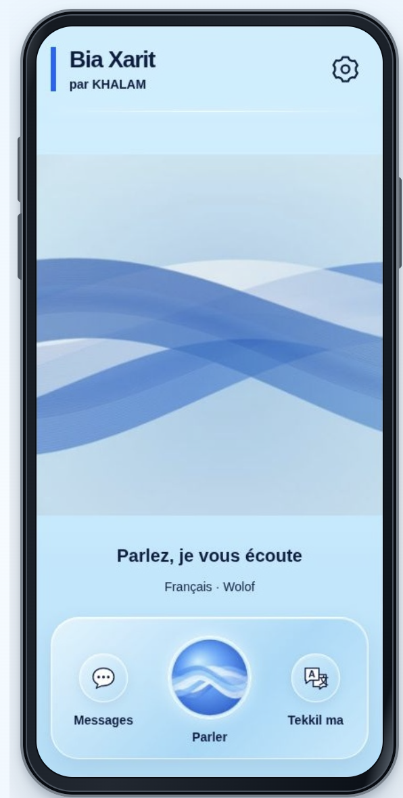
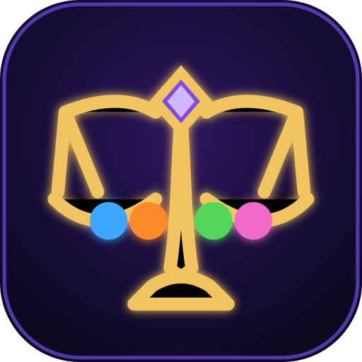
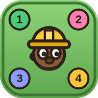

Images officielles · Studio KHALAM · Dakar, Sénégal
Images de BIA Xarit et des jeux KHALAM
Découvrez les huit visuels officiels de KHALAM, entreprise sénégalaise de création numérique : KHALAM IA avec BIA Xarit, son personnage et son interface mobile, ainsi que les images de ses jeux originaux. Chaque image possède sa propre description et renvoie à l’application ou au jeu correspondant.
Découvrir KHALAMApplication · Intelligence artificielle · Français et wolof
BIA Xarit : une assistante vocale créée à Dakar
Développée par le studio sénégalais KHALAM, BIA Xarit est une assistante d’intelligence artificielle pensée pour l’usage quotidien de la voix. Vous pouvez lui parler naturellement en français ou en wolof et lui demander de lire ou d’expliquer un document, de rédiger un message, de préparer un devis, de retrouver une information ou de programmer un rappel.
BIA réunit également des services comme Tekkil ma pour la traduction et l’interprétation, BIA Professeur pour accompagner les apprentissages, un carnet de commerce pour suivre certaines opérations et des fonctions de recherche, de guidage et de conversation. Son personnage visuel et son interface mobile permettent de découvrir cette expérience sans devoir maîtriser des menus compliqués.
Voir la présentation officielle de BIA Xarit et de ses services
BIA Xarit : icône, personnage et interface

Icône officielle de BIA Xarit
BIA Xarit, l’intelligence artificielle vocale de KHALAM, entreprise sénégalaise de création numérique basée à Dakar, accompagne les utilisateurs en français et en wolof. Cette application KHALAM IA aide à dialoguer, comprendre des informations, dicter des messages, préparer des devis et accomplir des tâches du quotidien. Création originale KHALAM · Tous droits réservés. L’icône de BIA Xarit est une création originale de KHALAM, entreprise sénégalaise. © 2026 KHALAM — Tous droits réservés. Reproduction, adaptation ou utilisation sans autorisation interdites, sous réserve des exceptions prévues par la loi.
BIA Xarit par KHALAM IA : icône de l’assistante vocale sénégalaise en wolof et français
Découvrir BIA XaritÉQUILIBRE — jeu complet de KHALAM : solo, duel en ligne et La Voie des Quatre Maîtres avec ses quinze Gardiens. Accéder au jeu officiel ÉQUILIBRE. Son icône officielle sera présentée dans cette galerie après vérification du fichier d’origine.
Les jeux originaux de KHALAM
Équilibre, Les Quatre Dames, ATOUT VIE et Les Quatre Cases : chaque illustration est associée à son jeu, avec un lien direct vers son site officiel.

Le personnage animé de BIA Xarit
Ce portrait représente le personnage officiel de BIA Xarit, l’assistante d’intelligence artificielle de l’entreprise KHALAM à Dakar. L’avatar donne un visage à KHALAM IA : une expérience vocale en français et en wolof pour échanger, demander des conseils, comprendre des documents, raconter des histoires et accompagner le quotidien. Création originale KHALAM · Tous droits réservés. Le personnage de BIA Xarit est une création originale de KHALAM, entreprise sénégalaise. © 2026 KHALAM — Tous droits réservés. Reproduction, adaptation ou utilisation sans autorisation interdites, sous réserve des exceptions prévues par la loi.
Avatar officiel de BIA Xarit, intelligence artificielle vocale de l’entreprise KHALAM
Voir le personnage de BIA
L’interface mobile de BIA Xarit
Cette image présente l’interface mobile de BIA Xarit, application KHALAM IA développée au Sénégal. L’assistante vocale de l’entreprise KHALAM propose notamment Tekkil ma pour la traduction, la lecture d’ordonnances et de courriers, la rédaction de messages et de devis, des rappels et l’accompagnement scolaire avec BIA Professeur. Création originale KHALAM · Tous droits réservés. L’interface de BIA Xarit est une création originale de KHALAM, entreprise sénégalaise. © 2026 KHALAM — Tous droits réservés. Reproduction, adaptation ou utilisation sans autorisation interdites, sous réserve des exceptions prévues par la loi.
Application KHALAM IA : interface mobile de BIA Xarit, traduction, documents, devis et rappels
Explorer les fonctions de BIAStudio KHALAM

Logo officiel du studio KHALAM
Logo de KHALAM, entreprise sénégalaise et studio de création numérique installé à Dakar. KHALAM conçoit des applications d’intelligence artificielle, dont BIA Xarit et ses services vocaux en wolof et en français, ainsi que des jeux numériques originaux destinés à différents publics. Création originale KHALAM · Tous droits réservés. Le logo de KHALAM est une création originale de KHALAM, entreprise sénégalaise. © 2026 KHALAM — Tous droits réservés. Reproduction, adaptation ou utilisation sans autorisation interdites, sous réserve des exceptions prévues par la loi.
Logo de KHALAM, entreprise sénégalaise de création numérique, jeux et intelligence artificielle
Découvrir le studio KHALAMLes jeux originaux de KHALAM
Équilibre, Les Quatre Dames, ATOUT VIE et Les Quatre Cases : chaque illustration est associée à son jeu, avec un lien direct vers son site officiel.

Les Quatre Piliers — emblème doré
Cet emblème doré illustre Les Quatre Piliers, un univers de jeu signé KHALAM, entreprise sénégalaise de création numérique. Quatre colonnes symbolisent l’équilibre entre amour, spiritualité, santé et argent, avec une esthétique de cartes fantastiques. Création originale KHALAM · Tous droits réservés. L’emblème des Quatre Piliers est une création originale de KHALAM, entreprise sénégalaise. © 2026 KHALAM — Tous droits réservés. Reproduction, adaptation ou utilisation sans autorisation interdites, sous réserve des exceptions prévues par la loi.
Les Quatre Piliers, illustration dorée du jeu par KHALAM, entreprise sénégalaise
Voir Les Quatre Piliers
Les Quatre Dames — L’Équilibre de Modou
Les Quatre Dames — L’Équilibre de Modou est un jeu créé par KHALAM, entreprise sénégalaise spécialisée dans la création d’expériences numériques. Modou, maçon, doit organiser ses ressources et son temps face à quatre besoins ; l’icône représente le plateau et les personnages du jeu. Création originale KHALAM · Tous droits réservés. L’univers des Quatre Dames est une création originale de KHALAM, entreprise sénégalaise. © 2026 KHALAM — Tous droits réservés. Reproduction, adaptation ou utilisation sans autorisation interdites, sous réserve des exceptions prévues par la loi.
Les Quatre Dames — L’Équilibre de Modou, jeu de KHALAM
Jouer aux Quatre Dames
ATOUT VIE — jeu de cartes
ATOUT VIE est un jeu de cartes conçu par KHALAM, entreprise de création numérique basée au Sénégal. Son emblème présente un A doré couronné et les symboles des quatre dimensions de la vie : amour, santé, argent et spiritualité. Création originale KHALAM · Tous droits réservés. L’icône d’ATOUT VIE est une création originale de KHALAM, entreprise sénégalaise. © 2026 KHALAM — Tous droits réservés. Reproduction, adaptation ou utilisation sans autorisation interdites, sous réserve des exceptions prévues par la loi.
ATOUT VIE : jeu de cartes de l’entreprise sénégalaise KHALAM
Découvrir ATOUT VIE
Les Quatre Cases — jeu des quatre villages
Les Quatre Cases est un jeu de cartes familial développé par KHALAM, entreprise sénégalaise de création numérique. Les enfants et les adultes y font évoluer quatre villages à travers des choix et des stratégies simples, dans l’univers des jeux KHALAM. Création originale KHALAM · Tous droits réservés. L’icône des Quatre Cases est une création originale de KHALAM, entreprise sénégalaise. © 2026 KHALAM — Tous droits réservés. Reproduction, adaptation ou utilisation sans autorisation interdites, sous réserve des exceptions prévues par la loi.
Les Quatre Cases : jeu familial de villages créé par KHALAM
Jouer aux Quatre CasesLes créations de KHALAM, à découvrir
Les images de cette galerie renvoient aux applications et aux jeux auxquels elles appartiennent. Pour découvrir le studio et l’ensemble de ses projets, consultez le site principal de KHALAM.